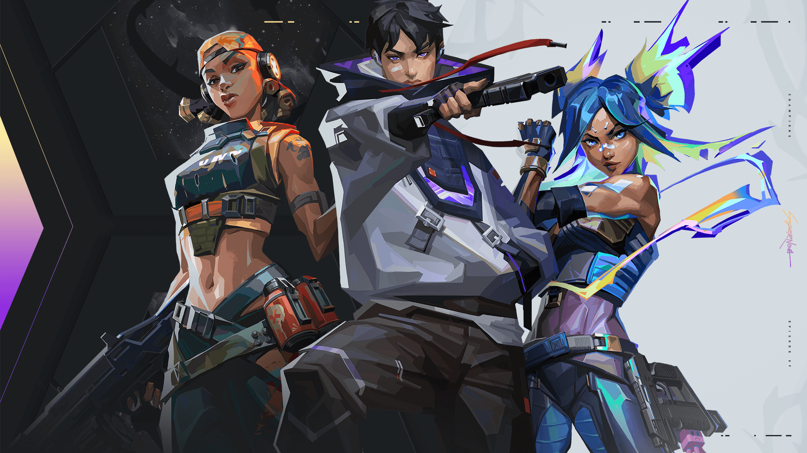
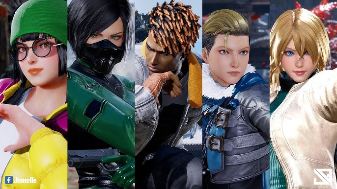
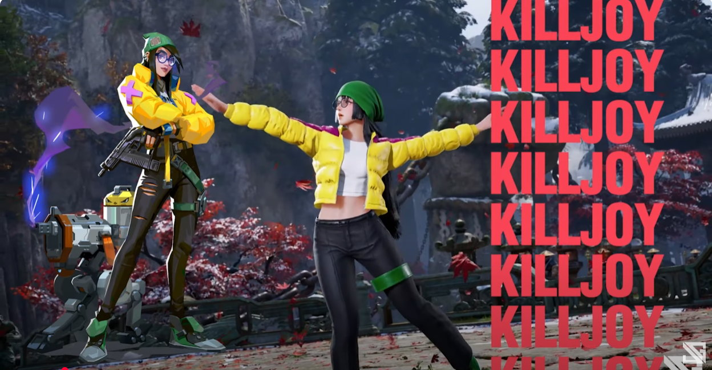
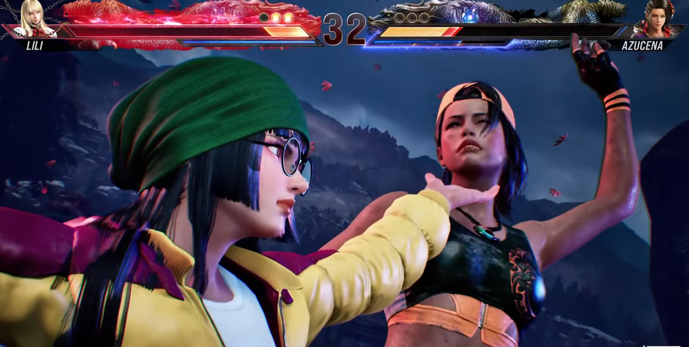

Quá ảo: Game thủ “hô biến” VALORANT thành game đối kháng Tekken, dàn nhân vật nữ “cực mẩy” khiến người xem thích thú
Phiên bản VALORANT này khiến anh em game thủ nào cũng phải mê mệt!
Sẽ thế nào nếu VALORANT biến thành một game đối kháng?
Chắc hẳn ở thời điểm hiện tại, các game thủ đã không còn lạ lẫm gì với VALORANT - tựa game FPS siêu hấp dẫn tới từ Riot. Vốn là game bắn súng, thế nhưng VALORANT đã được cải tiến, cung cấp thêm dàn nhân vật đa dạng với hệ thống kỹ năng chiến đấu đỉnh cao. Vậy, sẽ thế nào nếu những kỹ năng hỗ trợ bắn súng này, trở thành tuyệt chiêu trong game đối kháng 1vs1?
Để giải đáp, một game thủ Philippines có tên là Jomelle đã bắt tay hiện thực hoá kịch bản này. Cụ thể, anh chàng đã “hô biến”, sử dụng nguyên mẫu các đặc vụ trong VALORANT để tạo thành nhân vật trong Tekken 8.
Điều khiến phiên bản VALORANT này “gây bão” chính là dàn nhân vật nữ được thiết kế vô cùng bắt mắt. Killjoy, Razr, và Viper xuất hiện với ngoại hình được chỉnh sửa “cực mẩy”, mặc những bộ trang phục gợi cảm nhưng không kém phần mạnh mẽ. Không chỉ vậy, các đặc vụ này còn sở hữu những chiêu thức chiến đấu uyển chuyển, tạo ra các pha giao tranh hết sức mãn nhãn.
Cộng đồng game thủ rất thích thú trước phiên bản VALORANT “độc lạ” này
Rất nhanh chóng, bản mod đỉnh cao này đã khiến cộng đồng game thủ hết sức chú ý. Có ý kiến còn tếu táo, cho rằng phiên bản này là những gì các đặc vụ VALORANT thực sự làm khi “Eco tiền”, thậm chí còn hy vọng anh chàng Jomelle phát hành thành phiên bản game chính thức để thử sức trong tương lai.
 Tất nhiên, dù chỉ là một sản phẩm mod fanmade, ý tưởng này cũng đủ chứng minh sức sáng tạo vô biên của cộng đồng game thủ. Từ một tựa game FPS thuần túy, VALORANT đã trở thành nguồn cho một phiên bản đối kháng “kiểu mới” với trải nghiệm hoàn toàn khác lạ.